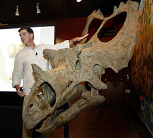

February
Scott Sampson
What's 75 million years old and brand spanking new? A teenage Utahceratops! Come to the Saroyan, armed with your best dinosaur roar, when Scott Sampson, Research Curator at the Utah Museum of Natural History, steps to the podium. Sampson's research has focused on the ecology and evolution of late Cretaceous dinosaurs and he has conducted fieldwork in a number of countries in Africa.
Scott Sampson is a Canadian-born paleontologist who received his Ph.D. in zoology from the University of Toronto. His doctoral work focused on two new species of ceratopsids (horned dinosaurs) from the Late Cretaceous of Montana, as well as the growth and function of certopsid horns and frills.
Following graduation in 1993, Sampson spent a year working at the American Museum of Natural History in New York City, followed by five years as assistant professor of anatomy at the New York College of Osteopathic Medicine on Long Island. He arrived at the University of Utah accepting a dual position as assistant professor in the Department of Geology and Geophysics and curator of vertebrate paleontology at the Utah Museum of Natural History. His research interests largely revolve around the phylogenetics, functional morphology, and evolution of Late Cretaceous dinosaurs.
In addition to his museum and laboratory-based studies, Sampson has conducted paleontological work in Zimbabwe, South Africa, and Madagascar, as well as the United States and Canada. He was also the on-air host for the Discovery Channel's Dinosaur Planet and recently completed a book, Dinosaur Odyssey: Fossil Threads in the Web of Life, which is one of the most comprehensive surveys of dinosaurs and their worlds to date.